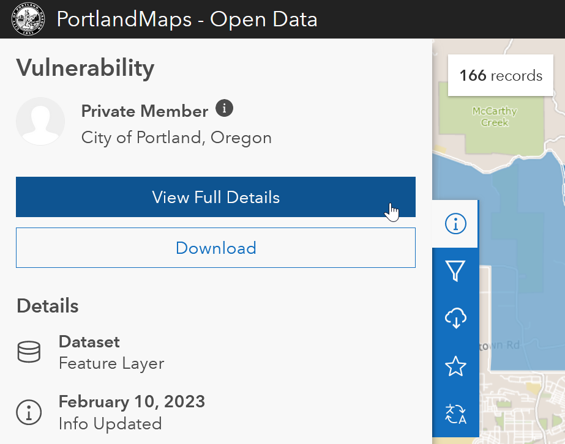
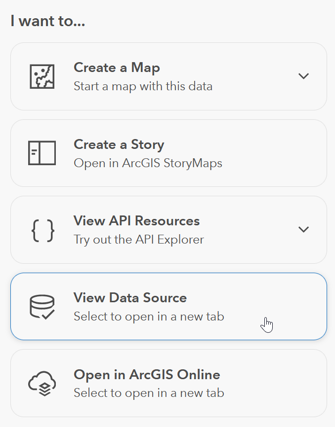
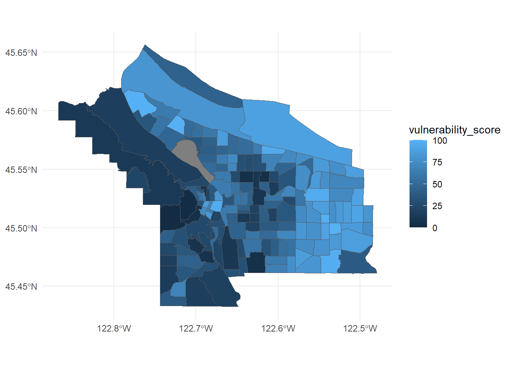

Much of the City of Portland’s open data is hosted on ArcGIS Online. You can download the data directly from that site in a variety of formats (CSV, GeoJSON, etc.) if you’re just interested in accessing it once. But if you’d like to pull the data repeatedly as it updates, that can be cumbersome.
The arcpullr package can pull data from ArcGIS Online directly into R. In this article I'll use some features I've added to it that are only available in the development version of the package, so before running the code below you'll need to install it from GitHub by running the following line:
Update July 29th, 2023: The CRAN version of arcpullr now includes these new features, so you can just install that instead of the version on GitHub.
Here are the packages we’ll use in the examples:
Suppose you’ve already used the search engine on PortlandMaps Open Data and decided you want the data from their Economic Vulnerability Assessment. You could download the data manually from there, but there is also a way to pull it into R by searching for the link to the data’s source.
First, click the info icon on the left, then click View Full Details.

Then on the right side of that page, click View Data Source.

Copy the URL of that page.
To pull the map data, pass that URL to
arcpullr::get_spatial_layer(). The result is an
sf object.
vulnerability <- get_spatial_layer(
"https://www.portlandmaps.com/arcgis/rest/services/Public/COP_OpenData_PlanningDevelopment/MapServer/207"
)
vulnerability %>%
ggplot() +
geom_sf(aes(fill = vulnerability_score)) +
theme_minimal()
Now suppose you’ve used the PortlandMaps search engine and decided you want the demographic dataset of individual recipients served by City of Portland Rescue Plan projects.
Just as above, navigate to the View Data Source button and copy its destination URL.
To pull the table, pass that URL to
arcpullr::get_table_layer(). The result is a data
frame.
prp_individual <- get_table_layer(
"https://www.portlandmaps.com/arcgis/rest/services/Public/COP_OpenData_ARPA/MapServer/1352",
head = 30 # just the first 30 records, to illustrate
)
prp_individualThat’s all. Enjoy!
6 March 2023